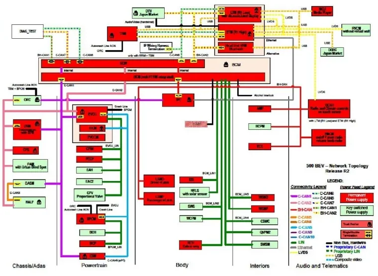
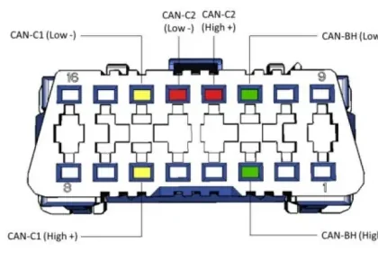
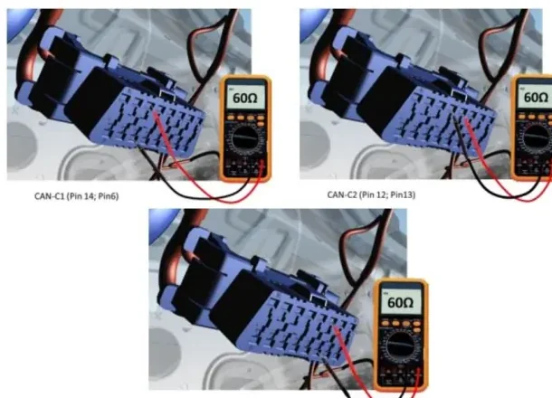

Vehicle E/E Architecture¶
A modern car is a distributed computer network on wheels: an average new vehicle carries more than 40 electronic control units (ECUs), about five miles of wiring and over 10 million lines of software, with electronics making up close to 40% of the vehicle's content — and the share keeps growing. The E/E (Electrical/Electronic) Architecture is what holds all of this together: it is the heart of the functional integration of the vehicle, distributing power, signals and functions to every E/E system on board.
The pressure behind this growth comes from four directions:
- fuel economy and electrification,
- safety and driving assistance,
- information, comfort and convenience,
- navigation and connectivity.
What the E/E architecture covers — and what it does not¶
The architecture work sits above the individual components and before the vehicle-level application tasks. It defines:
- Technologies and standards — network architecture, software architecture, diagnosis standards and hardware standards.
- Components — body electronic modules, power distribution units, wiring topology and connectors, plus the analysis needed to add or remove components.
- Interfaces to all E/E systems of the vehicle.
It explicitly does not include the downstream engineering activities that consume the architecture: packaging and wiring layout of a specific vehicle, development and testing of new application software, and tuning that software to reach performance targets.
Note
Think of the E/E architecture as the "constitution" of the vehicle's electronics: it fixes the rules, the partitions and the interfaces. What each ECU then does inside those rules is application work.
The documents that define an architecture¶
An E/E architecture is not one drawing — it is a set of coordinated specifications:
| Characteristic | What it defines |
|---|---|
| EEA standards | Engineering standards: EMC, electrical systems, networks, diagnostics, vehicle configuration management, development processes |
| Network topology | The overall communication network: which ECUs sit on which bus, and the type of power feed each ECU uses |
| SLA (Sense / Logic / Actuation) | How features and functions are distributed, including their inputs and outputs |
| Electrical interface | The hardware electrical interfaces between ECUs and switches, sensors, actuators and other ECUs |
| Network management | Wake-up and sleep management of the networks (related to AUTOSAR) |
| Diagnostic requirements | Base diagnostic specs, flash bootloader, diagnostic services and protocol |
| Vehicle Configuration Management | How vehicle-specific content (standard and optional features) is communicated to the ECUs, reducing part-number complexity |
| Network database | CAN and LIN message IDs, data length, timing, and signal content/location (the DBC/LDF world) |
| VF (Vehicle Functions) | Detailed description of the functionality, exchanged signals and algorithms of each feature or sub-feature |
Electrical interfaces (sensors, pedal assembly, starter), ECU re-programming, cyber-security level, AUTOSAR compliance and the standard CAN map all hang off this same definition.
Key drivers of architecture development¶
Four forces decide when an architecture must evolve:
- Integration and function complexity. The volume and complexity of new requirements grows at an exponential rate — every new feature adds signals, messages and cross-ECU interactions.
- Bus load capacity. Current networks already run at 50–60% bus load on the C-CAN. To guarantee robust communication (no missed messages, no latency problems), networks are kept below a 65–70% threshold. New features must be budgeted against this limit or the bus will overflow.
- Cyber security. Vehicles must be protected against attack. Secure CAN communication needs message authentication, which increases message data by ~50%; safety-critical modules need hardware trust anchors — as many as 18 ECUs on a high-feature-content vehicle.
- AUTOSAR. The open, standardized automotive software architecture makes software exchangeable across vehicle platforms, supplier solutions and OEM applications. Main benefits: a formally defined architecture, hardware independence, standardized software interfaces and functional-safety support.
Vehicle Functions (VF)¶
A Vehicle Function is any functionality that requires several ECUs to interact — usually over the CAN/LIN networks. VFs carry the high-level integration requirements between vehicle ECUs and are specific to each car line and each E/E architecture. They are documented in detail (signals exchanged, algorithms, conditions) in the functional specifications you will study in the VF lessons.
Network topology: how real architectures are laid out¶
Stellantis/FCA architectures illustrate the typical evolution. All of them share the same backbone ideas — 11-bit CAN IDs, LIN 2.x sub-networks, cruise-control commands on a LIN connected to the BCM, a signal-key architecture, and an advanced frame-security mechanism (CRC/message-counter coverage) — and differ in topology and in how they scale:
| Architecture | Example car line | Topology | Distinctive features |
|---|---|---|---|
| CUSW | KL | Star, BCM central hub | Direct PROXI in ECM; IPC on both B-CAN and C-CAN; torque CAN interface at flywheel torque level (Nm) |
| Atlantis / Nextgen | 520 | Daisy chain, ECM/BCM terminators | Multiple C-CANs plus new transmission types for bus-load reduction; AUTOSAR compliance (J4A Tier-1); Secure Gateway for cyber-security level 3 |
| BEV | 332 | Star, BCM central hub | Multiple C-CANs and multiple LINs; dedicated C-CAN for the e-powertrain; Secure Gateway; IPC on C-CAN |
| Powernet | DT | Star, BCM central hub | Like BEV plus dedicated e-PT C-CAN, but no direct PROXI in ECM — vehicle configuration travels via CAN |
Two recurring building blocks deserve attention:
- The IPC (instrument panel cluster) traditionally bridges the body and powertrain domains by sitting on both B-CAN and C-CAN; on the BEV architecture it moves to C-CAN only.
- The Secure Gateway (SGW) is the cyber-security checkpoint: diagnostic and cross-domain traffic is filtered through it instead of reaching the powertrain buses directly.

The CAN buses of the vehicle¶
Vehicles split traffic over several CAN buses classified by baud rate:
| Bus | Baud rate | Carries |
|---|---|---|
| C-CAN | 500 kbit/s | Powertrain and all emission-relevant ECUs (per EOBD rules) |
| BH-CAN | 125 kbit/s | Multimedia/infotainment and comfort ECUs |
| B-CAN | 50 kbit/s | Body, low-speed comfort |
| FD-CAN | variable, up to ~15 Mbit/s | High-bandwidth ECUs (CAN FD) |
The Nextgen architecture concretely uses three digital networks: CAN-C1 and CAN-C2, both high-speed at 500 kbit/s, and CAN-BH at 125 kbit/s.
CAN-C1 — powertrain and core¶
CAN-C1 interconnects the core of the vehicle: BCM (body control module), IPC (instrument cluster), ORC (airbag/occupant restraint), RFHm (radio-frequency hub), ABS, ACC (adaptive cruise control), TBM (telematic box), ECM (engine control), CDCM (chassis domain control) and the EOBD diagnostic socket. Automatic-transmission variants (GME AT) add the TCM (transmission control), DTCM (AWD driveline control) and AGSM (gear shifter module) to the same bus.
CAN-C2 — chassis and driver assistance¶
CAN-C2 collects the chassis-area ECUs: ABS, BCM, ESL (steering lock), PAM (parking aid), EPS (electric power steering), HALF (haptic lane feedback), ORC, TBM, AAML/AAMR (left/right active aerodynamics actuators), AFLS (adaptive front lights), CDCM, TVM (torque vectoring differential), plus the J001 junction connectors and the EOBD socket.
CAN-BH — interior comfort¶
CAN-BH serves comfort and infotainment: IPC, CSWM (seat/steering-wheel memory and heating), LBSS/RBSS (blind-spot sensors), AMP (Hi-Fi amplifier), TTM/TTEBM (trailer tow), HVAC (climate), ETM (infotelematics), BCM, TBM, EMCM (rotary infotainment selector), ANC (engine-sound enhancement) and PLGM (power liftgate).
Private CAN¶
Some ECU pairs talk so intensely that they get a dedicated bus: the ACC module and the HALF module are connected by a private CAN-C line because they exchange data continuously while adaptive cruise control and the forward collision warning (FCW) function are active.
flowchart TD
EOBD["EOBD diagnostic socket"]
subgraph Nextgen architecture
C1["CAN-C1 (500 kbit/s)"]
C2["CAN-C2 (500 kbit/s)"]
BH["CAN-BH (125 kbit/s)"]
PRIV["Private CAN-C"]
end
C1 --- C1N["ECM, IPC, ABS, ORC, ACC, BCM, CDCM, TBM"]
C2 --- C2N["EPS, PAM, HALF, AFLS, TVM, ESL, ORC"]
BH --- BHN["HVAC, ETM, AMP, IPC, CSWM, LBSS/RBSS"]
PRIV --- ACC["ACC"] & HALF["HALF"]
EOBD --- C1 & C2 & BHLIN sub-networks¶
Cheap actuators and sensors hang off LIN buses (see CAN, LIN & Ethernet for the protocol itself), always with an ECU acting as master. On the Nextgen vehicle:
- BCM is LIN master for four buses: LIN1 carries the child-detection module (CHDM), intelligent battery sensor (IBS), ultrasonic anti-tilt module (UAM), alarm unit (ASU) and rain/light sensor (RLS); LIN2 the wiper motor (WWSM), steering-wheel switches (SWS) and rear-view camera (RVCM); LIN3 the four window motors (WSMP/WSMD/WSMRL/WSMRR) and the two mirror modules (PMCM/DMCM); LIN4 the cruise-control steering-wheel commands (CSWC).
- ECM masters the intelligent alternator (IAM) and auxiliary water pump (AUW).
- AFLS masters the left/right xenon headlamp modules (LHDU/RHDU).
- HVAC masters the humidity sensor (HUM), the climate control panel (HCPM) and the cabin temperature sensor (ARST).
- EMCM masters the volume knob.
flowchart LR
BCM --> L1["LIN1: CHDM, IBS, UAM, ASU, RLS"]
BCM --> L2["LIN2: WWSM, SWS, RVCM"]
BCM --> L3["LIN3: 4 window motors, 2 mirror modules"]
BCM --> L4["LIN4: cruise commands (CSWC)"]
ECM --> L5["IAM, AUW"]
HVAC --> L6["HUM, HCPM, ARST"]
AFLS --> L7["LHDU, RHDU"]Sleep and wake-up¶
To save battery, the CAN-C1, CAN-C2 and CAN-BH networks enter sleep mode about 10–12 seconds after the key is turned OFF. They wake up again even with the key still OFF as soon as a door changes from closed to open — the BCM sees the door-ajar switch and brings the networks back to life so the vehicle is ready (interior lights, cluster, locks) before you even insert the key.
stateDiagram-v2
[*] --> Awake
Awake --> Sleep: key OFF for 10-12 s
Sleep --> Awake: door closed → open (key OFF)
Sleep --> Awake: key ON
Awake --> Awake: bus activity keeps network aliveWhy you care during testing
If you connect a diagnostic tool or a CAN logger and see a dead bus, wait: the network may simply be asleep. Opening a door (or turning the key) is the standard way to wake it — and conversely, any leakage current test must wait for the 10–12 s sleep transition.
The OBD-II diagnostic connector¶
All diagnosis goes through the 16-pin OBD-II / EOBD connector (usually under the dashboard near the steering column). On the Nextgen vehicle the three networks are pinned out as follows:
| Pins | Network |
|---|---|
| 6 (High) / 14 (Low) | CAN-C1 |
| 12 (High) / 13 (Low) | CAN-C2 |
| 3 (High) / 11 (Low) | CAN-BH |

Checking a CAN bus with a multimeter¶
Each of the three networks has two 120 Ω termination resistors, one at each end of the bus, wired in parallel by the twisted pair itself. A healthy, electrically continuous network therefore measures about 60 Ω between its High and Low pins at the diagnostic connector — with the vehicle asleep or powered off:
| Measure between pins | Network | Expected |
|---|---|---|
| 6 and 14 | CAN-C1 | ≈ 60 Ω |
| 12 and 13 | CAN-C2 | ≈ 60 Ω |
| 3 and 11 | CAN-BH | ≈ 60 Ω |

This is the fastest sanity check in vehicle troubleshooting: ~60 Ω means both terminations and the wiring are intact; ~120 Ω means one termination or one side of the bus is disconnected; a much lower value points to a short.
Warning
Always measure resistance with the bus unpowered. A resistance reading taken on a live network is meaningless and can damage the multimeter.
Key takeaways
- The E/E architecture defines standards, topology, SLA distribution, electrical interfaces, network management, diagnostics, configuration management and the network database — not the application SW work built on top of it.
- Architectures evolve under four pressures: feature complexity, bus load (keep C-CAN below the 65–70% threshold), cyber security (SGW, message authentication, trust anchors) and AUTOSAR.
- A Nextgen vehicle runs CAN-C1 and CAN-C2 at 500 kbit/s plus CAN-BH at 125 kbit/s; LIN sub-networks hang off the BCM, ECM, AFLS, HVAC and EMCM as masters.
- Networks sleep 10–12 s after key OFF and wake on a door opening.
- At the OBD-II connector, CAN-C1 is on pins 6/14, CAN-C2 on 12/13, CAN-BH on 3/11; a healthy bus measures ≈ 60 Ω between High and Low.
Where this leads
You will decode the traffic on these exact buses in CANalyzer, diagnose the ECUs behind them in the Diagnosis lessons, and test the Vehicle Functions that ride on top in VF.
Source material¶
This article was distilled from the academy lesson materials:
- :material-file-pdf-box: EE Architecture — PDF, 2.7 MB